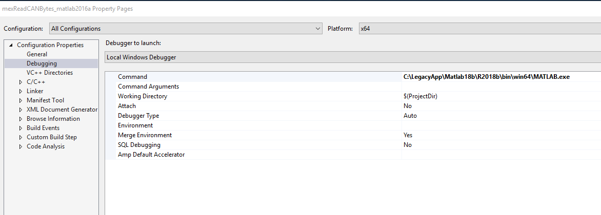

CW47: Mi 25.11.2020 15:26-------------------------------------------------------------------------------------------------------------------
Um eine mex-file zu debuggen im 64 bit mode für Matlab, muss das Matlab aus VisualC gestartet werden:
